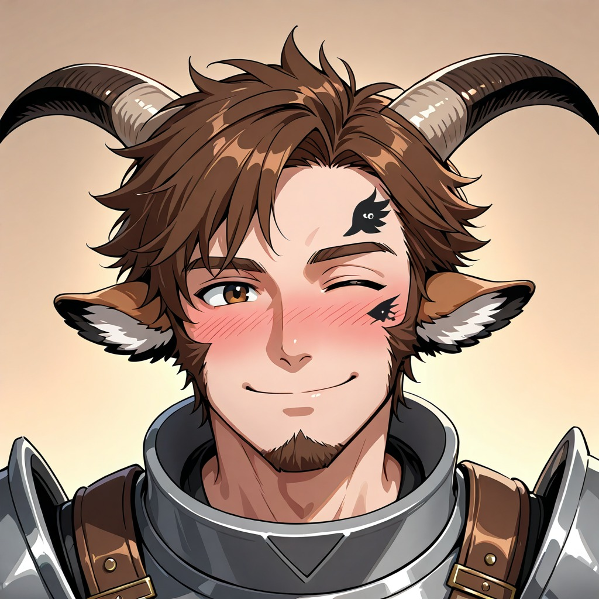
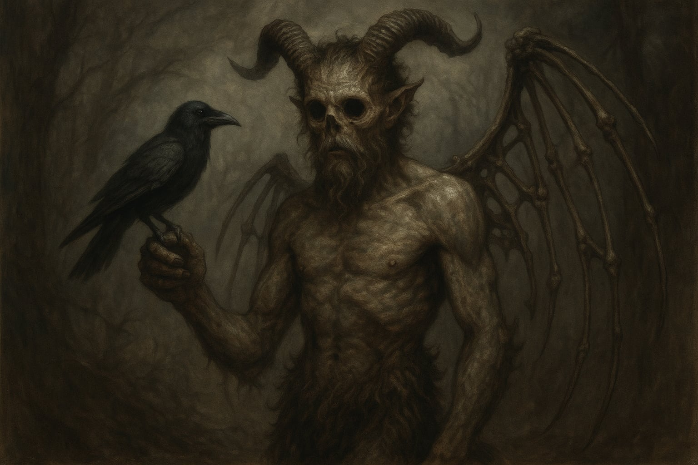

Glim
- NpcStatus: Player Character
- Aliases: ik, Glim

| Name | Race | Class | Background |
|---|---|---|---|
| Glim "Bok" | Satyr | Warlock (The Hexblade) | Feylost |
Kenmerken
- Bruin haar, vacht en ogen
- Zijn vacht ruikt naar honing
- Heeft grote hoorns, en koe-achtige oren
- Heeft altijd een zwarte morningstar bij en een zwart schild
- Een zwarte tattoo in de vorm van een raaf op zijn voorhoofd
- Behaarde geitenpoten en hoeven
- Een liefde voor ondeugd, waaronder alcohol en... andere dingen
- Een interesse in alles wat magisch is
- Natuurlijk nieuwsgierig
- Brengt overal een beetje mysterie en mysterie uit de Feywild mee
- Een affiniteit met de "regel van drie", die overal in het multiversum terugkomt. Het is ook de sterke band die hij had met zijn zus en broer.
Hoe Een Satyr Uit De Feywild Werd Gehaald
Glim is geboren en getogen in de Feywild, waar hij woonde in een bosdorp in de Faria Woods, de Feywild-echo van de Neverwinter Woods. Het grootste deel van zijn jeugd bracht hij door met zijn jongere broer Omos en zijn oudere zus Chia. De drie waren onafscheidelijk, zozeer zelfs dat ze door de dorpelingen de ‘regel van drie’ werden genoemd. Net als de meeste saters waren ze nieuwsgierig en gingen ze vaak samen op ‘avontuur’, wat meestal neerkwam op het verkennen van het bos en doen alsof ze de machtige krijgers en tovenaars waren waarover ze verhalen hoorden van de ouderen rond het dagelijkse kampvuur.
Op een dag stuitte het vrolijke trio op een glinsterend stuk zwart metaal dat uit de grond stak. Bij nader inzien bleek het een morgenster te zijn. Een zachte vrouwenstem fluisterde Glim toe en beloofde hem macht en eindeloze avonturen. Het was de stem van de Raven Queen, een mysterieus wezen uit de Shadowfell. Als een mot die door vlammen wordt aangetrokken, nam Glim het wapen in zijn handen en voelde onmiddellijk een krachtige magie door zijn aderen stromen terwijl een rookachtige energie rond de morgenster wervelde. Zijn spieren waren sterker, zijn geest werkte sneller dan ooit en hij voelde een verbinding met een krachtige magische bron uit een onbekend rijk.
Vanaf dat moment werd er een pact gesloten. Glim zou een instrument van de Raven Queen worden en zij zou haar krachten en wijsheid met hem delen. Opgewonden door deze nieuwe kracht draaide Glim zich om naar zijn broer en zus. Ze waren verdwenen! Het hele bos zag er zelfs anders uit; de feeëndraken die rond de boomtoppen vlogen, de elfjes die vrolijk zongen, de eenhoorns die in de nabijgelegen velden galoppeerden, ze waren allemaal verdwenen.
Een gevoel van eenzaamheid en wanhoop bekroop Glim toen hij besefte dat hij uit de Feywild was getransporteerd. Hij was alleen, zonder zijn geliefde broer en zus. Wat zouden zij op dit moment denken? Hoe zat het met zijn familie, zijn vrienden en de rest van zijn dorp? Hij keek naar de zwarte morgenster in zijn hand en vroeg om leiding. Een zachte stem fluisterde: “Je bent niet in de steek gelaten, groei en word sterk, mijn vat. Dit is het begin van de avonturen die je zijn beloofd. De schaduwen zullen je leiden als je dat toelaat, vind het verloren zwaard en schild die mijn naam dragen en de sleutel tot alle dimensies is van jou.”
De woorden van de Raven Queen bleven dagenlang door zijn hoofd echoën. Op dat moment besefte Glim dat dit precies was wat hij diep in zijn hart wilde: een kans om een echte avonturier te worden en alles te leren over onbekende landen, hun gewoonten en wezens. Dit vulde Glim met vreugde en opwinding, omdat hij voelde dat zijn band met de Feywild nog steeds sterk was, ook al was hij fysiek ergens anders.
Sindsdien reist Glim door het materiële rijk en gebruikt hij zijn krachten om kwaad te bestrijden en over de wereld te leren. Jaren later leerde hij Genris en Tera leerde kennen in een taverne in Neverwinter. Sindsdien zijn de drie onafscheidelijk.
De Amber Temple

Glim aanvaarde de krachten van de Amber Temple om sterker te worden. Dit bracht een grote kost met zich mee, zowel fysiek als mentaal:
- Zijn ogen smolten uit zijn oogkassen, maar hij kan nog wel zien
- Er zijn skeletvleugels uit zijn rug gegroeid waarmee hij permanent kan vliegen
- Hij moet elke dag een halve kilo beenderen eten om te overleven
- ???